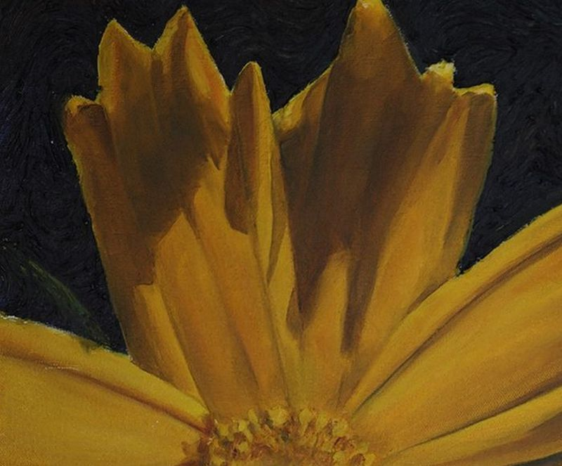
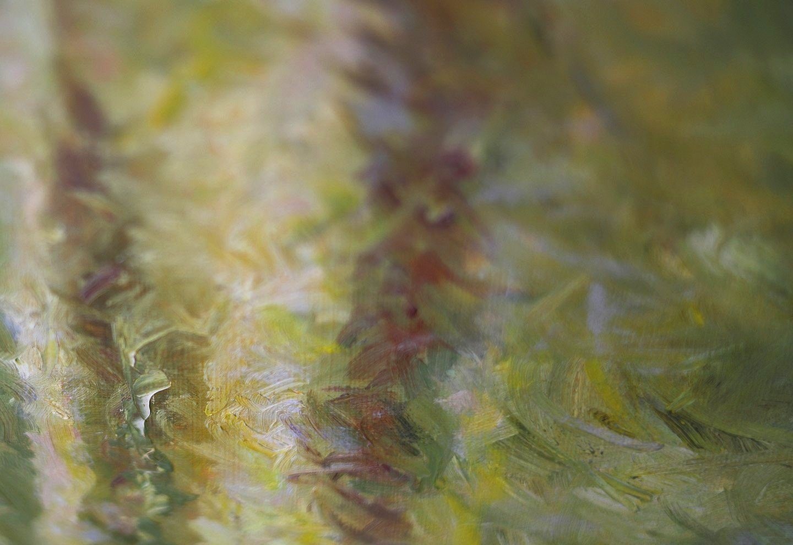

About · Oil painter, Central Arkansas
ScottMichaelBeckman
Born in Cincinnati, Ohio, and now living in Central Arkansas, Scott Michael Beckman is a versatile artist whose work spans landscapes, animals, florals and portraits.

With a deep passion for the expressive nature of oil painting, Scott’s work reflects both his artistic vision and his connection to the world around him.
His artistic journey has been shaped by a variety of life experiences. He proudly served in the U.S. military and later became a registered nurse. During the Covid-19 pandemic, Scott traveled to some of Texas’ hardest-hit areas, working in the ICU caring for those most in need. These experiences left a lasting impact on his approach to both life and art.
Scott has been married to his wife for 23 years and is the proud father of a son and daughter. His family remains a strong source of inspiration and support throughout his creative work.
Through his art, Scott captures the beauty and complexity of the world, inviting viewers to appreciate the small and significant moments in life. Whether it’s the calm of a landscape, the strength and beauty of an animal, or the intimate details of a portrait, his paintings evoke emotion and invite reflection.
- Born
- Cincinnati, Ohio
- Studio
- Central Arkansas
- Served
- U.S. military
- Nursed
- Texas ICUs, Covid-19 pandemic
- Paints
- Landscapes, animals, florals, portraits
- Medium
- Oil
“Art is my lifelong pursuit. Each new work is an opportunity to grow and challenge myself. I strive to make every painting the best I’ve ever done.”

Follow along